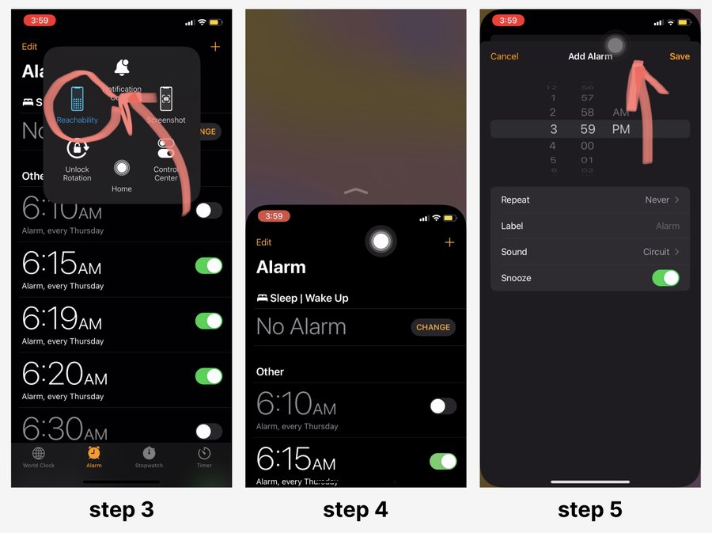

Reachability — Redesigning iPhone's One-Handed Mode
Reachability is Apple's built-in accommodation for one-handed use: a swipe down the home bar temporarily drops the interface so a thumb can reach the top of a large screen. It's a clever fix for a real ergonomic problem — but it was designed as a momentary assist, not a complete interaction system. I researched how well Reachability actually holds up against the way people really hold and use their phones, then designed a persistent, joystick-based control system that extends one-handed use into full cursor control, zoom, scroll, and text editing.

Caption. The redesigned concept — a persistent one-handed control panel built into the iOS keyboard itself.
Long story short
Reachability solves reaching the top of the screen. It doesn't solve one-handed typing, zooming, or precise cursor control.
Apple treats Reachability as a solved accessibility feature. My team and I treated it as a hypothesis worth testing — grounding the work in HCI literature on thumb ergonomics, auditing how competing platforms handle the same problem, and mapping exactly where the feature breaks down before designing a system meant to actually be lived in, not just visited.
Grounding the redesign in thumb-zone ergonomics and a competitive audit
Reviewed HCI literature on single-handed device interaction, then audited how iOS, Samsung, and Google Pixel each handle one-handed use.
Every existing one-handed mode treats reachability as the whole problem — it isn't
Shrinking or shifting the screen gets a button within reach. It does nothing for cursor precision, zoom, or scroll.
A persistent, joystick-based control system built into the one-handed keyboard
Borrows directly from game-controller mental models to give one thumb full control: move, click, zoom, scroll, tap-and-hold.
Every addition had to preserve Apple's existing interaction language
The concept builds on iOS's existing Reachability gesture and visual system rather than introducing something unfamiliar.
The Problem
Existing one-handed modes on iPhone behave more like temporary accommodations than permanent interaction systems.
Reachability has to be re-triggered for every single reach, and it reduces usable screen space while it's active. Even iOS's existing one-handed keyboard shift is only half-finished: the letters move, but the predictive-text suggestions above them don't, so the exact word a user wants can still land out of reach. And any gesture that needs more than one finger — pinch-to-zoom being the obvious case — simply isn't possible one-handed at all.
The Concept
A persistent control system, built into the one-handed keyboard, that treats one-handed use as a real interaction mode rather than a temporary accommodation.
A joystick-style controller maps cursor movement, zoom, scroll, and tap-and-hold onto a single thumb-reachable area — designed around thumb-zone ergonomics research, not just a shrunken screen.
Context
Bigger screens improved content experiences — but introduced physical interaction problems
Research by Hoober found that approximately 49% of users hold their smartphone with one hand, while another 36% use a cradled grip that still relies almost entirely on thumb-only interaction. Existing interface patterns increasingly conflict with how people actually hold and use their devices — and as smartphone displays keep growing, the reachable portion of the screen keeps shrinking relative to its total size.
Users with smaller hands
Thumb reach is a fixed physical constraint that scales worse every time screen size increases.
Users with upper-extremity impairments
A second hand may not be a reliable option at all, not just an inconvenient one.
Users multitasking with one hand occupied
Holding a coffee, a railing, or a child makes one-handed use situational rather than optional.
Users relying on accessibility features
Reachability is often a load-bearing part of how these users operate their phone at all, not an occasional convenience.
The issue is no longer simply reachability. The issue is interaction design.
Research
Grounding the concept in ergonomics literature before sketching anything
Before designing anything, I reviewed existing HCI research on single-handed device interaction. Karlson et al. (2006) found that diagonal thumb movement in the NW↔SE direction is the hardest movement for right-handed users to perform — which directly explains why the current one-handed keyboard's predictive-text bar is so hard to reach even after the keyboard itself shifts. Hoober's (2013) research on phone-holding behavior supplied the population-level evidence for why this problem is worth solving properly, rather than leaving it as a minor accessibility toggle.

Caption. Thumb-zone mapping across iPhone screen sizes — natural, stretch, and hard zones, based on Hoober's (2013) research. The iPhone 6s+ zone shape became the reference for the interface, since it best represents the "large phone" reachability problem.
I then audited how three major phone platforms already handle one-handed use, to establish what was worth keeping and what none of them had actually solved yet.


Caption. iPhone's Reachability mode in use — drop down, tap, and it snaps right back, ready to be re-triggered on the very next reach.
HCI framing
Positioning the work across the four waves of HCI
I used the four "waves" of HCI to make sure this stayed an accessibility project first, and a usability tweak second. Wave 4 — accessibility and inclusion — anchored every decision that followed.
Wave 1 — Human factors
What users need physically — gesture preferences, thumb placement, and how attention is split while operating an iPhone one-handed.
Wave 2 — Social computing
Deliberately out of scope for this phase, though the concept leaves room to extend into one-handed messaging and quick-reply flows later.
Wave 3 — Usability
Turning one-handed mode into something usable full-time, by leaning on a mental model — the joystick — people already understand.
Wave 4 — Accessibility & inclusion
The anchor for the whole project — making iOS genuinely usable one-handed, not just technically operable.
Design principles
What the concept couldn't afford to get wrong
Adding one-handed capability risked the opposite problem — an interface so packed with new interactions that it overwhelmed the exact users it was meant to help. Every decision was weighed against that risk directly.
Cognitive load
iOS already has a dense set of interactive features — adding more risked increasing overload for the users this concept was meant to serve.
Platform scope
Scoped specifically to iOS's one-handed mode rather than a hypothetical platform — iPhone's market share also meant a realistic, reachable pool of future test subjects.
Mental models
Any new interaction had to fit into people's existing mental model of a phone, while leaving their current workflow completely intact.
Ideation
Trackpad or joystick? Testing both control metaphors before committing
Early prototypes explored two different control metaphors: a laptop-trackpad-style surface for cursor movement, and a video-game-joystick approach. The joystick metaphor won out — it maps naturally onto a single thumb's range of motion, and most users already carry a strong, existing mental model for how a joystick behaves, which meant less for them to learn from scratch.

Caption. Early iterations — testing laptop-style trackpads against video-game joysticks before settling on the joystick metaphor.
Final concept
A control panel that lives in the keyboard, not a mode that has to be re-triggered
The final design keeps iOS's existing one-handed activation gesture, but replaces what happens next. Instead of a temporary screen shift, a persistent control strip sits above the keyboard — always available, always in the same natural thumb zone, whether the task is texting, browsing, or filling out a form.
Mouse controller
A central joystick that moves an on-screen cursor, with click-and-hold-to-drag — mirroring a game controller's stick so it needs no explanation.
Layout setting
Shrinks the keyboard's width to the left or right, adapting to each person's natural thumb arc rather than assuming one fixed reach.
Zoom toggle
Replaces the two-finger pinch gesture — impossible one-handed — with a switchable magnifying-glass cursor.
Scroll button
A dedicated vertical swipe control, so the joystick can stay focused on precise cursor movement instead of doing double duty.


Caption. Layout setting — not everyone's thumb reaches the same arc, so the keyboard's width adapts instead of asking the user to adapt to it.
Design rationale
Why this had to feel like it already shipped with iOS
Every decision was checked against one question: would this feel foreign to someone who's used an iPhone for years? That discipline is why the concept borrows so heavily from things people already know, rather than introducing a new visual or gestural language.
Visual consistency with Apple's design system
The interface follows Apple's existing visual language, and activates the same way the current Reachability gesture already does — no new gesture to learn.
Leveraging familiarity and mental models
Anyone who's used a game controller already understands how this joystick should behave — that familiarity does most of the onboarding work for free.
Building on existing one-handed mode
This is an addition inside iOS's existing accessibility system, built on top of what's already there rather than a replacement for it.
Recommendations
What comes next
Recommended next steps
Run one-on-one interviews with current Reachability and one-handed-mode users, setting aside our own assumptions to hear directly what's frustrating about the existing feature.
Usability-test the joystick prototype itself across a genuinely diverse group — different hand sizes and motor abilities — refining after every round rather than only at the end.
Follow up with a broader survey before finalizing, to catch pain points a small test group is likely to miss.
A note on scope
This project's six weeks were spent validating the problem and the interaction concept behind it — the joystick metaphor, the thumb-zone mapping, the case for treating one-handed mode as a persistent system. Validating the interface itself against real users is the natural next phase, not a gap in this one.
The most useful lens for any future iteration: a mental model borrowed from game controllers does a lot of the onboarding work for free — but only for users who've held one before. That's the first assumption I'd want real testing to confirm or break.
Why it matters
The case for taking one-handed mode this seriously
Accessibility as the default, not an add-on
Designed first for people with upper-extremity impairment, this concept would also serve the much larger population of users who simply hold their phone one-handed day to day.
A real business case, not just a nice-to-have
With roughly half of users already holding their phone one-handed (Hoober, 2013), solving this properly turns larger screens into an ergonomic advantage rather than a reachability tax.
A model for questioning "solved" problems
The most useful outcome of this project was the reminder that a shipped, widely-copied feature can still fail to solve the problem it claims to.
Limitations
Where this concept still needs real-world evidence
This phase of the work was research- and literature-driven by design — establishing whether the problem was real, and whether the joystick metaphor was a defensible answer to it, before investing in a built, testable prototype.
Concept validated by literature, not yet by users
Every design decision is defensible against published ergonomics research — the next test is whether it holds up against an actual motor-impaired user's hands.
An assumed mental model
The joystick metaphor is well-supported by ergonomics research and console-controller familiarity — but how it feels to actually type with is a question only usability testing can answer.
Single-platform scope
Scoped specifically to iOS to keep the project achievable in six weeks — Android's more fragmented ecosystem would need its own dedicated study.
Reflection
Designing under a constraint I hadn't faced before: no user access at all
On research-first design
Every claim in this project had to be earned from published literature instead of a transcript. That meant leaning much harder on sources like Karlson et al. and Hoober than I would on a project where I could simply ask someone directly — and it sharpened a distinction I now treat as core to my process: the difference between a decision that's well-supported by research and one that's actually validated.
On staying additive
I was proudest of the constraint that the concept never asks Apple, or the user, to give anything up. It sits on top of the existing Reachability system rather than replacing it — which is usually the more honest way to design for accessibility than starting from a blank page.
What I'd do differently
I'd sit down with actual Reachability users before refining the interaction model any further, and I'd specifically pressure-test the joystick metaphor against people who've never held a game controller — the whole design leans on that familiarity, and I don't yet know how it holds up without it.
Caption. Back to where the concept started — two control metaphors, one clear winner.